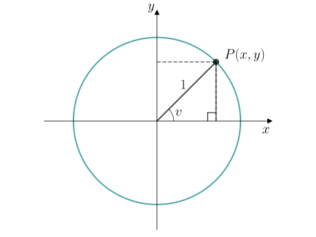

35. Enhetssirkelen#
Læringsmål
Kunne beskrive hvordan \(\cos v\) og \(\sin v\) henger sammen med koordinatene til et punkt \(P\) på enhetssirkelen.
Kunne bruke enhetssirkelen til å bestemme \(\cos v\) og \(\sin v\) for vinkler \(v \in [0, 360\degree\rangle\).
Vi har sett at \(\sin v\) og \(\cos v\) er forholdstall i rettvinklede trekanter. Fordi alle rettvinklede trekanter med samme vinkel \(v\) er formlike, er disse forholdstallene like uansett hvor stor trekantene er.
Hvis vi tenker oss at vi tegner en rettviklet trekant med hypotenus lik \(1\) i et koordinatsystem, og plasserer hjørnet med vinkel \(v\) i origo, så vil det andre hjørnet på hypotenusen ha koordinatene \((\cos v, \sin v)\). Varierer vi vinkelen, vil det ene hjørnet alltid ligge på en sirkel med radius \(1\) som har sentrum i origo. Dette vil også være tilfeller dersom vi lar \(v\) være større enn \(90\degree\). Denne sirkelen kaller vi for enhetssirkelen.
Utforsk 1
Nedenfor vises en rettvinklet trekant der hypotenusen er \(1\). Den ene kateten har lengde \(x\) og den andre kateten har lengde \(y\).

Bestem \(\cos v\) for trekanten.
Bestem \(\sin v\) for trekanten.
Forklar at
Hvorfor tror du dette kalles for Pytagoras’ identitet?
Vi har nå sett at \(\sin v\) og \(\cos v\) får en spesielt enkel form dersom vi jobber med en rettvinklet trekant der hypotenusen er \(1\). Men rettvinklede trekanter begrenser oss til å beskrive vinkelbuer som ligger mellom \(0\degree\) og \(90\degree\). For å kunne beskrive vinkelbuer som er større enn \(90\degree\), kan vi utvide definisjonen vår ved å ta utgangspunkt i en sirkel som har radius \(1\). Denne sirkelen kalles for enhetssirkelen. Denne definisjonen vil fortsatt gi akkurat de samme verdiene når vinkelen er mellom \(0\degree\) og \(90\degree\), men lar oss også definere \(\sin v\) og \(\cos v\) for vinkler \(v \in [0\degree, 360\degree\rangle\).
Enhetssirkelen
Enhetssirkelen er en sirkel med radius \(1\) og sentrum i origo. Et punkt \(P\) på enhetssirkelen vil da være
der \(v\) er vinkelen mellom \(OP\) og \(x\)-aksen i positiv omløpsretning. Dette betyr at vi trekker en vinkelbue fra \(x\)-aksen mot klokka til vi treffer linja \(OP\). Se figurene nedenfor.

Utforsk 2
Nedenfor vises enhetssirkelen med et punkt \(P(x, y)\) tegnet inn på sirkelen. En trekant er tegnet inn der hypotenusen går fra origo opp til punktet \(P\).
{kind=link}

Bestem \(\cos v\) for trekanten.
Løsning
Ut ifra trekanten er hypotenusen \(1\) og den hosliggende kateten er \(x\). Dermed får vi
Bestem \(\sin v\) for trekanten.
Løsning
Ut ifra trekanten er hypotenusen \(1\) og den motstående kateten \(y\). Dermed får vi
Forklar at svarene dine i a og b betyr at
Løsning
Siden \(x = \cos v\) og \(y = \sin v\) og koordinatene til punktet \(P\) er \(P(x, y)\), så har vi at
Underveisoppgave 1
Nedenfor vises enhetssirkelen med en linje fra origo ut til en punkt \(P\) som har vinkelen \(v = 37\degree\) med \(x\)-aksen.

Bruk figuren til å bestemme
Fasit
Løsning
\(x\)-koordinaten til punktet \(P\) er \(\cos 37\degree = 0.80\) og \(y\)-koordinaten til punktet \(P\) er \(\sin 37\degree = 0.60\). Dermed har vi at
Nedenfor vises enhetssirkelen med en linje fra origo ut til en punkt \(P\) som har vinkelen \(v = 133\degree\) med \(x\)-aksen.

Bruk figuren til å bestemme
Fasit
Løsning
\(x\)-koordinaten til punktet \(P\) er \(\cos 133\degree = -0.68\) og \(y\)-koordinaten til punktet \(P\) er \(\sin 133\degree = 0.73\). Dermed har vi at